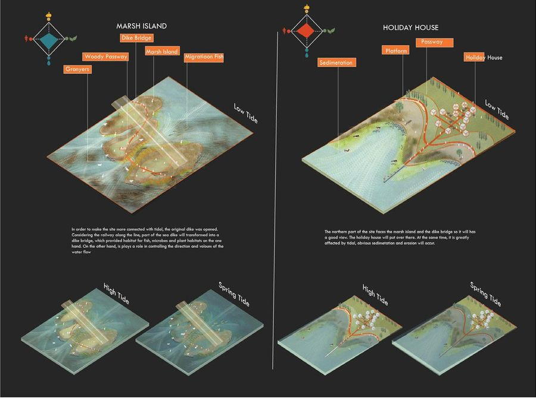
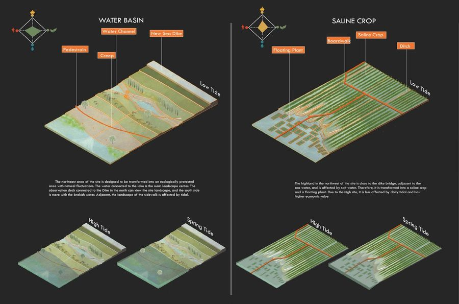
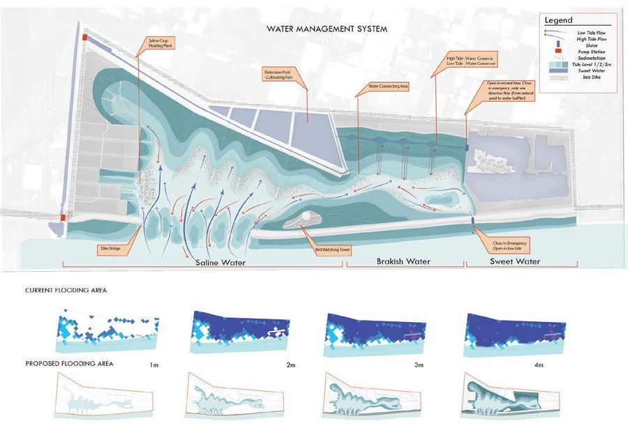
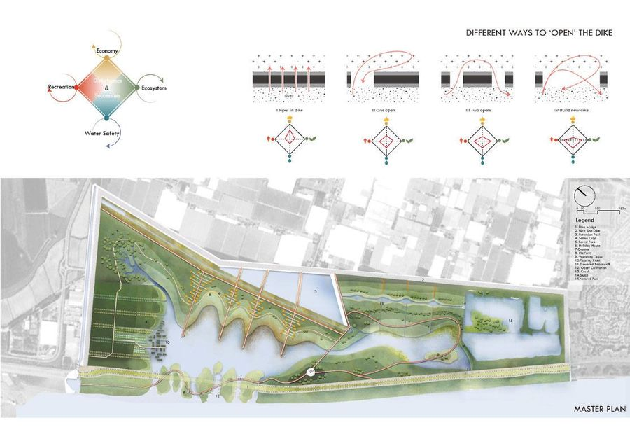

Tidal Park
- Place
- Hook of Holland, NL
- Year
- 2018
- Type
- Academic work
- Supervisor
- Inge Bobbink

Embracing water into landscape — a park shaped by the tide rather than defended from it.
本项目原 PDF 里没有正文，这段是我根据图纸和副标题写的草稿
A study of what happens when a coastal landscape is allowed to work with the tide instead of resisting it. The terrain is modelled so that water reaches different levels at different moments, producing a park that reads differently at every hour of the tidal cycle.

The drawings test a sequence of ground conditions — from permanently wet to rarely flooded — and the vegetation and access each of them can carry.



 Next projectBeautiful decayVenice, Italy, 2016
Next projectBeautiful decayVenice, Italy, 2016